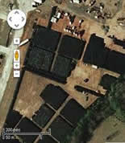
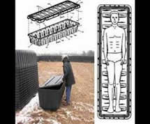
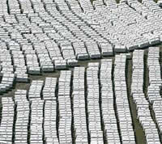
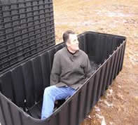
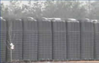
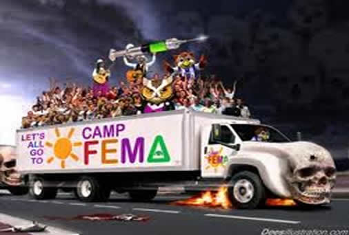
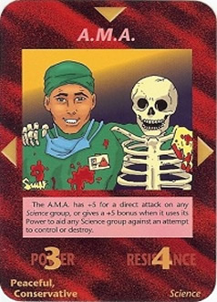
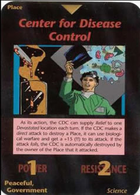
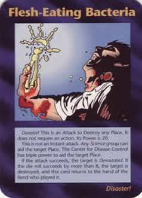
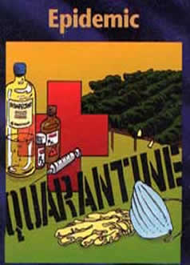

CAMPOS DA FEMA
O FEMA (Federal Emergency Management Agency - Agência Federal para o Tratamento de Emergências) é uma agência do governo americano criada pelo ex-presidente George W Bush, para ser um órgão de auxílio da população contra grandes desastres (maremotos, terremotos, furacões, ataques terroristas, etc).
Porém existem muitos americanos (e pessoas de vários outros países incluindo o Brasil) filmando vídeos e colocando na internet sugerindo que esta agência na verdade são campos de concentração espalhados pelo EUA, equipado com crematórios, câmaras de gás, mais de 5 milhões de caixões de plástico que cabem 4 corpos adultos e cemitérios de concreto. Vendo alguns vídeos no youtube, realmente é de se estranhar tamanho complexo, ou o governo espera grandes tragédias ou pretende implementar algo que provoque uma grande rebelião popular Americana.
| Veja bem o símbolo da FEMA, contém um triângulo (um dos símbolos dos illuminati), o criador da FEMA é o ex-presidente Bush (coincidência?!). |
Resumindo o que quero dizer aqui, os campos da FEMA são uma espécie de prisões criadas para abrigar milhares de pessoas. Só que não há quartos e sim caixões e mais caixões empilhados e vazios, cada caixão tem capacidade para até quatro corpos adultos, neste local também há crematórios.
Tudo isso se resume a que o governo está prevendo a morte de muitas pessoas, seja por catástrofes da natureza, epidemia controlada, ou uma lei marcial, na qual qualquer cidadão que discorde das leis do governo será tido como criminoso e levado para um dos campos da FEMA, de onde acredita-se ninguém sairá com vida. Pois um dos planos dos illuminati é matar mais de 80% da população dos países e controlar o restante.
|  |  |  |  |
Sabem o que é FEMA e o que ela representa?
O temido órgão do governo americano construiu mais de 700 campos de concentração que lembra os usados por Hitler. O próprio povo tem fotografado e filmado essas instalações e colocado na internet afim de alertar o mundo. São equipados com enormes fornos crematórios, câmaras de gás (carruagens) e sempre próximo a ferrovias, estão espalhados por todos os estados, trens camburão de três andares equipados com celas, tem sido filmado. Mais de 5 milhões de caixões de plástico que cabem 4 corpos de adultos foram amontoados em muitos cemitérios de várias cidades, da pra ver no google earth! Cemitérios com catacumbas de concreto para 40 corpos vem sendo construídos em ritmo acelerado e pessoas se armando e fugindo para as montanhas para não se deixarem vacinar e muito mais. Parece que algo muito ruim e em grande escala está para acontecer!
Ha mais de 15 anos pesquiso sobre essas coisas, material aqui é o que não falta e nesse ínterim, já vi que a maioria das coisas que intuitivamente pesquisei, de uma forma ou outra, se tornaram reais em pouco tempo. Minha intenção é despertar o máximo de pessoas possível, para que vejam além do que a mídia corporativa divulga. A Nova Ordem Mundial já está aqui e daqui em diante, em poucos anos, veremos do que os líderes desse movimento é capaz! Aproveitem enquanto se pode contar com a internet para obter informações, pois até essa liberdade está com os dias contados.
Por: Guerreiro há 2 anos atrás no site Yahoo.
|  |
Bactérias e vírus de doenças altamente nocivas, são modificadas em laboratório.
|  |  |
|  |  |